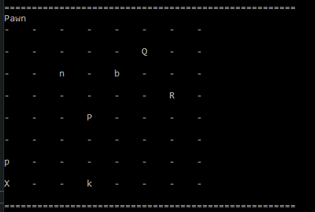
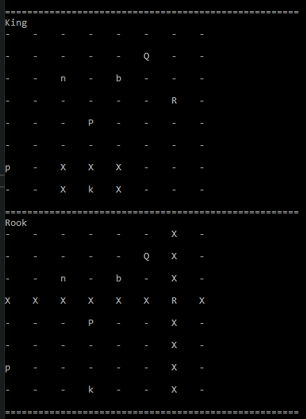

This project was conducted as the midpoint project for my training at Sparta Global. We were tasked with creating a 3-layer model, consisting of a GUI frontend with WPF, an SQL database backend, and a logic layer in between to allow the two ends to communicate. Agile methodology using Scrum framework was adopted for the development of this project. As this was my first C# project in producing a full application from start to finish, I decided to set myself a challenge and attempt to create chess with login and registration functionality.
I wanted to begin this project by first creating an SQL database. Using a model-first approach, I created classes for users and themes and used Entity Framework to migrate the model to the database. This is so the program can contain persistent data so there is no need to reinitialise values every time I manually tested the program.
Windows Presentation Form (WPF) was used as the GUI where I designed a very simple (yet strangely enticing) display to allow users to register an account and storing the information on the database. This was very simple as it only required basic CRUD functions with some logic to ensure the user did not enter a pre-existing username and that the entered passwords were the same.
Having completed the basic user login and registration, I moved onto the more challenging task of creating a chess engine from scratch. To begin, I drew a plan of how chess worked. The basic rules of chess were distilled into its constituent components and every step drawn out. For instance, to move a pawn one square forward, it would first need to know what position it was in, what the position of the desired square is, and change its position property to the new square. The old square would then be declared unoccupied, and the new square declared occupied.
Once I could place pieces on a board, I needed to identify what pieces they were. To do this was simple, an abstract class called “Piece” was created that will act as the base class for all other pieces. Then it was simple to create new piece classes that had the same properties as the Piece class with varying values for properties such as white or black and move sets.
The next step was to determine where the pieces could move, as they are bound by a set of rules. To tackle this problem, I began with creating a list of moves that each piece could ever possibly do. For example, a King can only ever move in one direction in any direction, a Rook can only ever move 8 squares in each direction, and so on. Each piece would store all these moves as a “Moveset” within their class. The piece would then need to communicate with the chessboard to find where each of the pieces on the board exist and filter their move set based on the positions. After many attempts and refactors, I managed to apply all the rules and have a fully functional chess game (bar special rules such as en passant and castling).
After completing the chess game engine and connecting it to WPF, I began work on QOL functionality such as changing chessboard colours, saving progress, and playing against an AI. Creating the AI was surprisingly easy. The majority of functionality required already existed such as searching for legal moves and moving a piece. All that was needed was to replace human input with computer inputs. This was done by making use of the random range function, so the AI makes a random legal chess move. Extending on that, I decided to add the option to have an aggressive AI that would take any piece it can. The code was mostly the same with the extra condition that if it finds square that are legal and occupied, then it will take a random one. And thus, a very simple Chess AI was completed.
I found that creating the save functionality was much more difficult. As I did not know about the Forsyth-Edwards Notation (FEN) at the time, I had to think of a way to store the state of the chessboard as persistent data. SQL only allowed primitive datatypes to be stored, so I looked to serialising the information into a file. Thus, I had to learn how to serialise the chessboard state into an XML file. This was likely the most challenging part of this project as I learnt how to use LINQ to XML as well as serialising and deserialising the information. But after a day, I managed to get everything working. The final touches, code optimization and testing were conducted and thus, my first C# project was complete.
All in all, I was quite pleased with the final result of the program. I'm very happy to have compelted all of this two months into my programming journey. The task was intense and difficult with a deadline of only one week, but I revelled in the challenge. As a result, I gained valuable experience in created a piece of software from beginning to end.
The lessons I learnt were plentiful, including learning the importance of planning as I did not feel my planning was extensive enough, resulting in a slow start to the project. Unit testing was also non-exhaustive resulting in a lot of slow manual testing meaning a lot of refactoring was required as code smells were abundant. Finally, I realise that applying agile methodology and scrum framework have been incredibly useful in keeping my work in check and to ensure I focus only one the important tasks. For future projects, I will continue to use agile as well as ensuring I do not try to have major refactors late in the development by starting off with clean code.